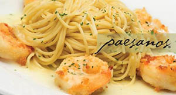

This week I had my first night out in almost 5 months. My best friend and I decided to go for a nice dinner at local restaurant in SA. Arriving to this restaurant was an experience in itself. If you have never been, Paesanos on 1604 is like an island in itself. With no other restaurants to its left or right, walking up to the front door was like walking to a villa in Tuscany. The building was just beautifully covered in a gorgeous green ivy, and the patio is a wonderful oasis with its own koi pond and water fall and the most beautiful string lights. Not only was Paesanos beautiful it was massive, I could easily see a romantic wedding or party being held here. It was a truly amazing scenery.
Our evening began with a pre dinner cocktail of Cucumber and mint martinis. Which were not only delicious but very elegant in design. After our drinks we shared an appetizer of the Chef's famous Black and Blue Mussels. These muscles were a lot different than the typical white wine sauce one usually enjoys with mussels. The Black and blue seasoning was almost a smoky cajun flavor, that was deliciously aromatic. Luckily we shared because it was quite the late potion for an appetizer. For dessert we enjoyed the most indulgent chocolate martinis, probably the most dangerous drink. Truly a an amazing cocktail that taste nothing like alcohol was decorated with different chocolate designs for both of us. Although this outing was supposed to be a nice dinner, we both felt the the food prices were a little out of our range but we continued with another after dinner drink called the Carajillo. My favorite drink of the night was really the cherry on top of the cake. This drink is served with a team. Basically a side car, this Spanish liquor is lit a flame and burned right in front of you. Our server explained the burning allows the sugar and vanilla sweetness comes through more after the burning. After 30 seconds or so the liquor, still lit on fire, is poured gracefully into an iced esprsso until the flame is out. Delicious. A perfect drink to end the night.
We may have not eaten much but out time there was enjoyed. I highly recommend this restaurant for a romantic dinner or even a family party. The setting is right out of movie. The staff are very nice and helpful, and the food and especially their signature drink menu were delicious.